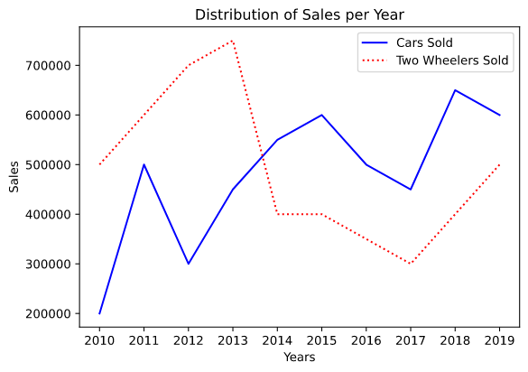
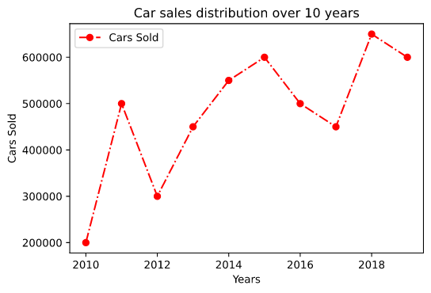

To draw a line plot there's not a lot we need to do, it is just about performing a few simple steps. The only thing we need to worry about is the source of data and the clarity of the data we are going to plot.
Here is how we can draw the very first of our line plots.
Importing all the libraries required to draw plots (matplotlib) and work with data (numpy).
Plotting lines with matplotlib
# imports
from matplotlib import pyplot as plt # can also be imported as "import matplotlib.pyplot as plt
import numpy as np
Notes : 1. Importing pyplot as plt is kind of a standard but one can use any name instead of plt that suits them better.
2. Importing numpy as np is also a standard and can also be replaced with any name that suits the programmer.
Writing down the data to be plotted.
# data to be plotted
years = np.array([2010,2011,2012,2013,2014,2015,2016,2017,2018,2019])
cars_sold = np.array([200000,500000,300000,450000,550000,600000,500000,450000,650000,600000])
two_wheelers_sold = np.array([500000,600000,700000,750000,400000,400000,350000,300000,400000,500000])
Plotting the data using the plot() method of matplotlib's pyplot module.
This method draws a line plot based on the values of x_axis and y_axis arguments.
The line plotted takes the color from the value specified for the color variable and the style of the line is picked form the style defined with the linestyle argument.
There are a number of color values that can be passed including the hexadecimal values.
And the following line styles can be used :
":"
"-"
"--"
"-."
The plot can be given a nicer look, i.e. enhancing the details it provides by providing the abscissa and ordinate with labels that can represent their purpose as well as giving the plot a name.
plt.legend() helps displaying the labels that were passed to the plot() method.
plt.title(name) provides the plot a title.
plt.xlabel(name) gives the x-axis a name (or label).
plt.ylabel(name) assigns the y-axis with a name.
plt.tight_layout auto adjusts the padding for the plot.
plt.xticks(ticks,label) sets the tick location and labels for x-axis.
plt.yticks(ticks,label) sets the tick location and labels for y-axis.
plt.savefig(name) saves the generated plot as an image in the current directory or to the path provided with the specified name.
plt.show() displays the plot.
# plotting the data for the cars
plt.plot(years,cars_sold,color="Blue",label="Cars Sold")
# plotting the data for two wheelers
plt.plot(years,two_wheelers_sold,color="Red",linestyle=":",label="Two Wheelers Sold")
plt.legend()
plt.tight_layout()
plt.xticks(ticks=years,labels=years)
plt.xlabel("Years")
plt.ylabel("Sales")
plt.title("Distribution of Sales per Year")
plt.show()
This generates the following plot ->

Line Plots
That's all we really need to do to plot a very basic line plot.
Continue with the tutorial for learning to plot other types of plots. But before we leave we have a little trick to share with you:
Extras :):):)
You can skip this but thats not a good choice...
The fmt strings
The fmt parameter is a convenient way for defining a basic formatting for the line like color,marker and linestyle.
A format string consists of a part for color, marker and line:
fmt = '[marker][line][color]'
Each of them is optional. Note: If line is given, but no marker, tje plot will be a line without markers.
fmt = '[color][marker][line]' is also a supported format.
Markers that can be used:
"." : Point marker
"," : Pixel marker
"o" : Circle marker
"v" : Triangle down marker
"^" : Triangle up marker
"<" : Triangle left marker
">" : Triangle right marker
"1" : Tri down marker
"2" : Tri up marker
"3" : Tri left marker
"4" : Tri right marker
"s" : Square marker
"p" : Pentagon marker
"*" : Star marker
"h" : Hexagon-1 marker
"H" : Hexagon-2 marker
"+" : Plus marker
"x" : x marker
"D" : Diamond marker
"d" : Thin diamond marker
"|" : vline marker
"_" : hline marker
plt.plot(years,cars_sold,"ro-.",label="Cars Sold") # "ro-." is an fmt string
plt.legend()
plt.title("Car sales distribution over 10 years")
plt.xlabel("Years")
plt.ylabel("Cars Sold")
plt.show()
The above code generates the following plot ->

Line plot using fmt string
That's it...See you in the next tutorial...until then a H3avren style Ta-Da...